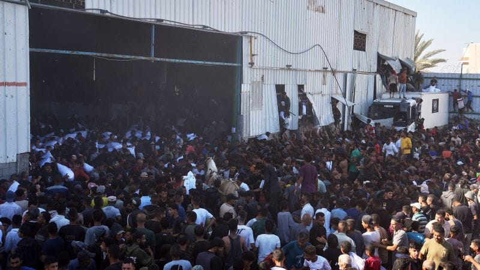

世界苦茶05月30日新闻 | 36条 | 以色列與哈馬斯達成60日停火

以色列與哈馬斯達成60日停火 | 以色列發起最大規模侵吞約旦河西岸行動 | 美國限制對華輸出飛機發動機和EDA軟件 | 特朗普"對等關稅"裁決暫緩 | 中國在西沙群島部署轟炸機 | 中國國防部長將在2019年後首次缺席香會
每天三件事：
苦茶数据
美元兑人民币：7.19（昨日7.19，前日7.18）
美元兑日元：143.99（昨日145.82，前日144.32）
上证指数：3347（昨日3355，前日3339）
标普500指数：5912（昨日5888，前日5921）
比特币：105585（昨日108077，前日108912）
布伦特原油：63.91（昨日65.68，前日64.38）
中国新闻
• 中国5月气温偏高 ：中国5月的平均气温较常年同期偏高，全国有287个气象站日最高气温突破春季历史极值。综合央视新闻和中新网报道，中国气象局星期四召开新闻发布会，发布5月全国天气气候特征、“端午”假期天气和6月气候趋势预测及气象服务提示，并答记者问。中国国家气候中心副主任贾小龙介绍，5月全国平均气温17.1摄氏度，较常年同期偏高0.9摄氏度。除东北地区大部、华北北部、西南地区中部及内蒙古中东部等地气温较常年同期偏低0.5至2摄氏度外，全国其余地区气温接近常年同期或偏高。
• 苗华被官方首次定性违法 ：中国官方首次披露中共中央军委委员、军委政治工作部主任苗华涉嫌违法。全国人大常委会最新发布的公报显示，苗华去年11月因涉嫌严重违纪被停职后，今年3月中也因严重违纪违法被罢免十四届全国人大代表职务。中国人大网发布的第三号全国人大常委会公报，显示苗华被解放军和武装警察部队选为十四届全国人民代表，因他涉嫌严重违纪违法，中央军委政治工作部今年3月14日召开军人代表大会，决定罢免苗华的十四届全国人民代表大会代表职务。这是继去年11月国防部记者会公布苗华涉嫌严重违纪被停职检查后，官方首次披露苗华涉嫌违法。
• 美将撤销中生签证引争议 ：美国务卿鲁比奥称将开始撤销中国学生的签证，中国外交部表示坚决反对并提出交涉，并指这一歧视性做法戳穿美国所谓“自由开放”谎言。鲁比奥星期四发声明称，美国政府将开始撤销中国学生的签证，包括“与中国共产党有联系，或是在关键领域学习”的中国学生。中国外交部发言人毛宁星期四在例行记者会回应称，美方以意识形态和国家安全为理由，无理取消中国留学生签证，严重损害中国留学生的合法权益，干扰两国正常人文交流。
• 中方呼吁印巴克制 ：中国国防部呼吁印度和巴基斯坦双方保持冷静克制，并说中国愿继续为维护地区和平稳定发挥建设性作用。中国国防部新闻发言人张晓刚大校星期四回应澎湃新闻提问关于中国外销型战机歼-10CE取得实战战果的问题时说，印巴是搬不走的邻居，希望双方保持冷静克制，避免局势进一步复杂化。“政知见”微信公众号报道，央视《军情时间到》栏目本月中旬盘点热点装备，提到中国外销型战机歼-10CE首次取得了实战战果，在空战中一举击落多架战机，自己无一损失。
• 菲律宾拒中方海权声明 ：菲律宾外交部星期四指中国无权反对或干涉菲律宾在南中国海展开的合法与例行活动。据路透社报道，菲国外交部也称，针对中国驻菲使馆发言人在声明中称中国对南沙群岛有无可争辩的主权，菲国外交部对此予以拒绝和驳斥。中国驻菲律宾使馆发言人曾在去年4月强调，中国对南沙群岛及其附近海域拥有无可争辩的主权。中国海警今年5月也重申这一立场。 （翻評：發生在東盟海合會中國峰會期間，有很強的指向性。）
• 中国浮标撤出日本专属区 ：日本海上保安厅星期三在官网发布消息，指中国撤除了设置在冲绳县与那国岛以南日本专属经济区内的浮标，意味着日本经济水域的中国浮标清零。分析认为，北京此举旨在改善对日关系。据日本共同社星期四报道，设置于台湾附近的与那国岛以南浮标、去年12月被发现。日本反复要求撤除，中国浮标并成为中日之间悬而未决的问题。中国政府则解释说，与那国岛以南的浮标用于气象观测，并称设置浮标合法。
• 解放军代表将出席香会 ：中国国防部星期四宣布，中国人民解放军国防大学代表团将从星期四至6月2日出席香格里拉对话会。路透社报道了上述消息。这项宣布也证实中国国防部长董军今年不会到新加坡出席香格里拉对话的消息；这将是中国防长2019年以来首次缺席这场亚洲最主要之一的国际防务年会。 （翻評：哈？董軍不去香會，這個意義不太尋常。）
• 中国轰炸机部署西沙群岛 ：美国卫星图像显示，中国本月将两架最先进的轰炸机，部署在有主权争议的南中国海西沙群岛。分析人士认为，此举是北京向竞争对手发出的最新军事信号，展示日益增强的军力。据路透社星期三报道，此次部署是中国自2020年以来首次将远程轰炸机轰-6降落在西沙群岛的永兴岛，时间点正值中国和菲律宾关系紧张、中国军机频繁活动于台湾周边，以及本周末区域最大防务论坛——香格里拉对话会即将召开。中国在2012年宣布成立三沙市，行政范围涵盖西沙、中沙和南沙群岛，借此抗衡越南和菲律宾对南中国海岛礁的主权诉求。截至2020年11月，三沙市常住人口为2333人。
• 王毅抵港准备签署仪式 ：中国外长王毅星期四下午抵达香港，副外长华春莹陪同他访港。网媒“香港01”报道，王毅从厦门飞抵香港，准备隔天星期五出席《关于建立国际调解院的公约》签署仪式。消息人士称，仪式将在湾仔会展举行。中国外交部早前已公布，王毅将出席于5月30日在香港举行的签署仪式。王毅乘坐的飞机下午1时40分降落在香港国际机场。约十分钟后，在大批警员开路下，王毅乘坐白色小巴离开机场。现场画面显示，王毅乘专车从机场离开时，华春莹及中央驻港特派员公署特派员崔建春陪同在侧。
• 中国宣布援助太平洋岛国 ：中国星期三同太平洋岛国在厦门召开外长会。中国会后发布六点倡议，宣布向岛国提供200万美元应对气候变化资金等。王毅星期三至星期四在福建省厦门市主持召开第三次中国—太平洋岛国外长会，11个同中国建交的太平洋岛国外长或代表，以及太平洋岛国论坛副秘书长纳亚西应邀参会。此次外长会是2021年中国—太平洋岛国外长会机制建立以来，首次以线下方式在中国举办。
• 美防长香会将谈中美信任 ：美国官员透露，美国防长赫格塞斯本周末出席香格里拉对话时，将向亚洲盟友阐明，美国是比中国更值得信赖的合作伙伴。第22届香格里拉对话5月30日至6月1日在新加坡举行。美国官员告诉路透社，赫格塞斯将于星期六在香会上发表长篇演讲，阐述他对美国在印太地区的防务政策的看法。美国国防部一名高级官员说：“赫格塞斯将向亚洲盟友说明，为什么美国是比中国更好的合作伙伴。”
亚太印太新闻
• 陆委会质疑小红书统战功能 ：中国上海复旦大学中国研究院院长张维为日前表示，随小红书等大陆社群平台受台湾年轻人喜爱，相信统一后治理台湾会比香港还容易。台湾陆委会主委邱垂正29日表示，这是首次有大陆学者把社群软体与统一联系起来，使用这些大陆著名社群软件，恐怕都要提高警觉，会请各级学校提醒使用这类应用可能问题。他并称，一直对小红书是否为统战工具有高度怀疑，强调有必要从法制面规管。邱垂正表示，发现太多涉及统一、武力统一、毁弃 “中华民国主权” 地位、毁损台湾作为自由民主 “宪政国家” 的声音都在这些社群平台中。目前已跟相关主管单位讨论有关问题，以进一步从法制面去规管。 （翻評：臺灣現在沒有封小紅書、TikTok和抖音簡直匪夷所思。）
• 韩军机坠毁四人罹难 ：韩国海军一架载有四人的海上巡逻机在东部山区坠毁，机上四人全部遇难。综合韩联社和韩国新闻通讯社News1报道，韩国海军一架P-3C海上巡逻机于当地时间星期四下午1时40分左右，在庆尚北道浦项市南区的野山坠落。搜救人员后来在现场附近找到四名机组成员遗体，部分遗骸因飞机起火严重受损。遇难者分别为一名少校飞行员、一名上尉，以及两名副士官。
• 韩前总统支持者被判刑 ：韩国前总统尹锡悦支持者因试图闯入中国驻韩国大使馆被判刑一年半。综合韩联社和韩国纽斯频通讯社报道，曾身穿漫威电影人物“美国队长”服装、试图闯入中国驻韩大使馆的前总统尹锡悦支持者安姓男子获刑一年半。安男因涉嫌非法入侵建筑物未遂、损坏财物及公共物品等被韩国首尔检方逮捕起诉。首尔中央地方法院刑事审判庭星期三对该案宣判，判处安男有期徒刑一年六个月。
• 马克龙授勋印尼总统 ：法国总统马克龙在访问印度尼西亚期间，授予印尼总统普拉博沃法国最高荣誉勋位勋章。法新社报道，马克龙与普拉博沃在印尼首都雅加达会晤后，于星期四乘坐直升飞机前往中爪哇省马格朗军事学院。普拉博沃于1970年进入马格朗军事学院，毕业后加入军队，后曾担任印尼国防部长。他与马克龙一同出席军事学院的阅兵式，其间，马克龙向他授予法国荣誉军团勋章。
• 柬泰边境冲突后寻和解 ：泰国和柬埔寨短暂冲突后寻求和平解决方案。两国军队28日在边境争议地区发生短暂冲突。柬埔寨称泰国开火时，柬埔寨军队正在边境例行巡逻。泰国军方表示，柬埔寨士兵进入争议地区，并在泰国士兵接近谈判时开火。交火持续约10分钟，直到双方指挥官相互交谈并下令停火。1名柬埔寨士兵在冲突中死亡。泰国总理佩通坦和柬埔寨首相洪玛奈29日均表示，不希望冲突升级。柬埔寨陆军29日说，柬泰两国达成协议，同意保持克制，避免在有争议的边境地区发生武装冲突。双方将继续通过所有现有机制解决问题，例如联合边界委员会、柬泰总边界委员会以及两国2000年签订的谅解备忘录。
科技新闻
• 宋晓冬谈AI安全 ：人工智能技术近年发展迅速，关于AI安全的讨论也层出不穷。人们对这项技术充满憧憬，也抱有疑虑。在业界不乏有人担忧，若重视AI安全，随之而来的监管可能会拖累技术创新。有“计算机安全教母”之称的宋晓冬教授认为，对负责任的创新而言，AI安全和防护是关键的要素和支柱；就像开车时系上“安全带”，并不是让你慢下来，而是为了帮助车子跑得更快。在计算机系统和网络安全研究领域知名的美国加州大学伯克利分校计算机系教授宋晓冬，星期三在新加坡亚洲科技会展一场“炉边对话”中，分享了她对于AI安全和治理的看法。
• 荣耀宣布开发人形机器人 ：中国智能手机制造商荣耀宣布进军人形机器人产业，推进100亿美元拓展人工智能战略。综合彭博社、每日经济新闻和东方财富报道，从华为剥离出来的荣耀终端正在开发人形机器人，这是该公司进军中国竞争激烈的AI领域的举措之一。总部位于深圳的荣耀终端星期三宣布，新产业孵化部已决定进一步拓展机器人领域，包括人形机器人。今年3月，荣耀曾宣布百亿美元新产业拓展计划，聚焦AI和新应用。
• 《纽约时报》授权亚马逊用内容 ：在起诉OpenAI公司和微软公司侵犯版权近两年后，《纽约时报》同意将其新闻内容授权给亚马逊，用于训练这家科技巨头的人工智能平台。该媒体在一份声明中表示，该协议将“把《纽约时报》的新闻内容引入亚马逊的各种客户体验中”。这包括新闻文章、来自专注于美食和食谱的网站《纽约时报烹饪》，以及以体育为核心的网站The Athletic的内容。该公司还指出，亚马逊对《纽约时报》新闻内容的使用可能会扩展到其智能音箱上的Alexa软件。交易条款尚未披露，但这是亚马逊首次达成此类协议。这也是《纽约时报》首次同意以生成式AI为重点的许可协议。
财经新闻
• LVMH称中客消费减缓 ：法国奢侈品集团路威酩轩副首席执行官比安奇警告称，中国消费者近期在出境游和消费方面支出有所减少，反映奢侈品市场需求疲软。据彭博社报道，比安奇星期三在法国议会的一场听证会上对议员们表示：“过去三个月，中国游客的境外旅游和购物都出现减少。”据LVMH公布的数据，第一季度LVMH在包括中国在内的亚太地区，营收按可比口径下滑11％。 （翻評：中國是全面的消費降級，不僅僅是低收入者。）
• 港机场离境税十月上调 ：香港国际机场离境税将从今年10月1日起，调高至200港元。港府欢迎立法会通过这项决定。据香港政府公报，香港特区政府欢迎立法会星期三通过《2025年飞机乘客离境税条例草案》（简称《条例草案》），落实2025至26年度《财政预算案》的建议，把飞机乘客离境税由每名乘客120港元增加至200港元，预计政府收入每年可增加约16亿港元。新税率适用于2025年10月1日或之后购买的机票。获通过的《条例草案》将于6月6日刊宪。港府发言人说︰“政府在考虑增加飞机乘客离境税时，已在增加收入和减低对乘客的影响之间作出平衡。有关增幅对飞机乘客的整体出行开支影响十分轻微。”
• 美限制EDA软件对华出口 ：美国据报针对半导体设计软件对华销售设限，要求涉事企业申请执照才能向中国出口该软件。路透社引述两名消息人士报道上述消息。其中一人称，楷登电子、新思科技和西门子EDA等电子设计自动化软件制造商，上星期已接到美国商务部的通知信函，要求它们停止提供其技术。消息也称，美国商务部将逐案审核每一份许可申请，意味着上述措施并非全面禁止对华出口相关技术。
• 美国暂停向中国出口飞机和半导体技术： 特朗普政府已暂停对华出售部分关键美国技术，包括与喷气发动机、半导体以及某些化学品和机械相关的技术。据两位知情人士透露，此举是对中国近期限制向美国出口关键矿产的回应。围绕关键供应链日益加剧的僵局可能会对依赖外国技术的公司产生重大影响，包括飞机、机器人、汽车和半导体制造商，包括向中国商飞机公司出售飞机引擎相关技术，以及向中国公司提供 EDA 软件。美国商务部工业和安全局已经联系业内部分公司，告知他们需停止向中国客户销售至少部分产品。这些知情人士称，在特朗普政府完成相关问题政策的制定之前，这些限制措施可能只是暂时的。
• 英伟达称中国损失80亿 ：美国晶片巨头英伟达当地时间星期三公布最新财报。预计截至7月底的第二季营收将达450亿美元。尽管受中国出口限制影响，营收预期仍与市场预期相符，带动公司股价盘后上涨4%。英伟达说，受美国加强对华数据中心处理器出口管制影响，预料本季将损失约80亿美元的中国收入。公司同时披露，由于相关限制，已计提45亿美元减值损失。不过，英伟达总裁黄仁勋在财报电话会议中强调，全球对人工智能基础设施的需求“非常强劲”，并指出“每个国家都把AI视为下一场工业革命的核心”。他也重申，公司将加快新一代Blackwell晶片的生产，以应对客户对运算能力日益增长的需求。
• 法院暂缓对等关税裁决 ：美国联邦巡回上诉法院5月29日暂时搁置了美国国际贸易法院禁止执行特朗普“对等关税”的裁决，以考虑特朗普政府的上诉。上诉法院还命令双方提供书面论据，并在下月初提交。白宫高级顾问彼得·纳瓦罗表示，除上诉外，政府还考虑其他征税手段。当天早些时候，哥伦比亚特区联邦地区法院法官鲁道夫·孔特雷拉斯裁定特朗普政府使用《国际紧急经济权力法》征收“对等关税”和以芬太尼为由对中国、加拿大和墨西哥征收关税属于越权。但裁决仅适用于提起诉讼的玩具公司。特朗普政府亦对该裁决提出上诉。
• 欧盟阿联酋启动FTA谈判 ：欧盟与阿联酋星期三正式启动双边自由贸易协定谈判，为欧盟在海湾地区达成首个全面贸易协定创造可能性。新华社消息，欧盟委员会负责贸易和经济安全等事务的委员谢夫乔维奇与阿联酋外贸国务部长泽尤迪，星期三在迪拜重申达成协定的共同愿景，并就路线图达成一致，实质性谈判工作最早将于6月启动。首次谈判会议将重点讨论降低商品关税、便利服务、数字贸易和投资流动。双方还将探讨在可再生能源、绿色氢能和关键原材料等战略领域促进贸易的方式。
俄乌战争
• 俄乌6月将在伊斯坦布尔谈判 ：俄罗斯外交部长拉夫罗夫说，俄罗斯与乌克兰的第二轮直接谈判将于6月2日在土耳其伊斯坦布尔举行。拉夫罗夫星期三在俄外交部网站发表的声明中说，俄方按此前会谈达成的约定制订了相应的备忘录，阐明俄方在妥善解决乌克兰危机根源相关问题上的立场。他说，由俄罗斯总统助理梅金斯基率领的俄代表团已准备好，6月2日在伊斯坦布尔举行的第二轮谈判期间向乌克兰代表团提交这份备忘录并作出必要说明。
其他新闻
• 加沙数百名巴勒斯坦人5月28日闯入联合国世界粮食计划署仓库中哄抢食物，4人在混乱中死亡： 联合国加沙高级人道主义和重建协调员西格丽德·卡格称，加沙面临饥荒的人们已经失去希望，他们相互之间不道“再见”而道“天堂见”。此前一天，加沙人道主义基金会的分发点发生骚乱，以军鸣枪示警造成1人死亡、48人受伤。不过该基金会称，28日分发了约8辆卡车的援助，未发生事故。在也门，以色列28日袭击了也门萨那机场，据称摧毁了胡塞武装使用的最后一架飞机。
• 以色列接受加沙停火提议 ：美国中东问题特使威特科夫已分别向哈马斯和以色列提交修改后的加沙停火提议。消息人士称，提议包括哈马斯释放10名活的人质和18具人质遗体，双方实施60天的停火，以色列少量撤军并释放千余名被囚禁的巴勒斯坦人等。白宫表示，以色列已接受新的临时停火提议。虽然哈马斯声明表示将对修改后的提议进行审查，但消息人士称，哈马斯29日表示不接受提议，认为这是一份不能保证战争结束的亲以色列提议，要求对提议进行修改。
• 特朗普劝以暂缓攻伊朗 ：美国总统特朗普说，他已警告以色列总理内坦亚胡暂勿攻击伊朗，以便美国政府有更多时间推动与伊朗达成新的核协议。特朗普星期三在白宫告诉记者：“我告诉他，现在这么做不合适，因为我们已经非常接近达成解决方案。现在情况随时可能发生变化，一个电话就能改变一切。”特朗普还说，他认为伊朗希望达成协议，这将“挽救许多生命”，协议可能在未来几周内达成。
• 以色列拟建22新定居点 ：以色列安全内阁计划在它占领的约旦河西岸建立22个新定居点，称这项决定具有历史意义。法新社报道，以色列财政部长斯莫特里奇和国防部长卡茨星期四共同宣布，以色列安全内阁决定，“在犹太和撒玛利亚建立22个新社区，在撒玛利亚北部重建定居点，并加强以色列国的东部轴线”。犹太和撒玛利亚是以色列对约旦河西岸的称呼。自1967年以来，以色列一直占领西岸地区。
• 加拿大野火17000人撤离 ：加拿大西部马尼托巴省星期三遭遇多年来最严重的山火，超过1万7000人被迫紧急撤离。马尼托巴省省长基内夫星期三宣布马尼托巴省进入紧急状态，总理卡尼已派遣武装部队前往救援。基内夫在新闻发布会上说，采取这一措施是因为马尼托巴省北部和东部的野火迅速蔓延，火情极端严重。当局将疏散约1万7000人，大多数疏散人员将被安置在马尼托巴省首府温尼伯。
• 特朗普拟提速移民拘留 ：一名知情人士透露，美国特朗普政府指示移民官员将每日逮捕人数提高至3000人，目标是每年逮捕超过100万人，此举将显著加快拘留速度。这一新目标是特朗普第二任期初期每日逮捕人数的三倍。在特朗普执政的头四个月，非法越境人数明显下降，执法重点逐渐从边境转向美国本土社区。非边境地区的逮捕行动因此变得更加激进。然而，这种高压手段也导致特朗普在移民问题上的支持率出现下滑，部分原因是公众对误捕合法居民乃至美国公民的担忧日益加剧。知情人士透露，这项指令是在特朗普的高级顾问米勒和国土安全部长诺姆最近主持的一次会议上发布的。据指，会议的氛围令一些高级官员担心，如果未能达成目标，可能会被解雇或调职。
• 伊朗生起诉美暂停面签 ：十五名伊朗学生和研究人员起诉美国特朗普政府，指控其在决定是否审查所有签证申请人的社交媒体账户期间完全停止学生签证面试。该诉讼是在弗吉尼亚州联邦法院对国务卿马可·卢比奥提起的，声称暂停学生签证面试违反了《行政程序法》，该法禁止制定反复无常的规则。该诉状目前处于保密状态。学生的律师柯蒂斯·莫里森和哈姆迪·马斯里在一封电子邮件中指出，自 2019年5月以来，美国国务院就要求签证申请人披露他们的社交媒体账号。马斯里表示，来自伊朗等某些穆斯林占多数国家的签证申请人已经受到“广泛的社交媒体审查”，他补充说，特朗普似乎想“确保入境的学生符合他的政治价值观”。
• 冯德莱恩倡建独立欧洲 ：欧盟委员会主席冯德莱恩呼吁在世界舞台发生剧烈变革之际，建立一个真正独立的欧洲。法新社报道，冯德莱恩星期四在德国亚琛市接受国际查理曼奖项，她呼吁“为21世纪塑造一种新的欧洲和平秩序，这种秩序应由欧洲自己塑造和管理”。冯德莱恩在领奖时表明，“我们以往的国际秩序已迅速演变为国际混乱”；几十年来，以美国为首的北约联盟导致欧盟产生一种“自满情绪”，但俄罗斯入侵乌克兰打破了这种旧有的确定性。
• 美国国务院启动大重组 ：美国国务院将进行大规模重组。在国务院给国会的通报中，此次重组目标包括将国内雇员人数裁减多达3448人。但此次裁员不会影响负责签发护签的工作人员或外交安全人员。重组应在7月1日前基本完成。根据一份执行摘要，国务院45%的机构被合并或取消。部分专注于民主和人权的部门将被取消或合并，将增设高级职位专注于“民主与西方价值观”。处理移民问题的办公室将大幅重组，以专注于遣返无证移民。国务卿鲁比奥表示，重组计划将使国务院更加灵活，更好地促进美国利益并保护全世界美国人的安全。国务院发言人表示，这些变化是国务院高层深思熟虑的结果，并考虑了其长期雇员的反馈意见。